Bu projede Web API + arayüz yaklaşımı seçilmiştir. Backend API yalnızca JSON üretir; HTML5 + CSS3 arayüz frontend container'ında sunulur ve tarayıcı veriyi JavaScript fetch ile alır; Apache ise /api/ isteklerini PHP 8.2 tabanlı uygulama servisine yönlendirir.
İstek Akışı Örneği (POST /api/rezervasyon): İstemci fetch('/api/rezervasyon', { method: 'POST', ... }) ile isteği gönderir. Apache /api/ kuralıyla isteği uygulama/index.php dosyasına iletir. index.php çağrıyı Kontrolcu::yonlendir() metoduna aktarır. Kontrolcü oturum ve menu_id / porsiyon parametrelerini doğrulayıp ServisKatmani::rezervasyonYap() iş kuralını çağırır; servis katmanı da VeriKatmani::spRezervasyonYap() üzerinden mysql-primary üzerinde sp_rezervasyon_yap yordamını çalıştırır ve güncel bakiyeyi okuyarak JSON yanıtını istemciye döndürür.
docker compose ps çıktısında tüm servislerin (mysql-primary, mysql-replica, redis, uygulama, frontend) sağlıklı (healthy) olduğu ve replica-setup container'ının kurulumu tamamlayıp başarıyla çıktığı doğrulanmıştır.mysql-primary) sp_bakiye_yukle ile yapılan bakiye yüklemesinin replika sunucuya (mysql-replica) aktarıldığı teyit edilmiştir.read-only) kısıtı nedeniyle reddedilmiştir.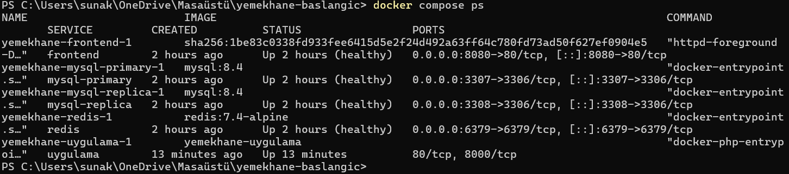
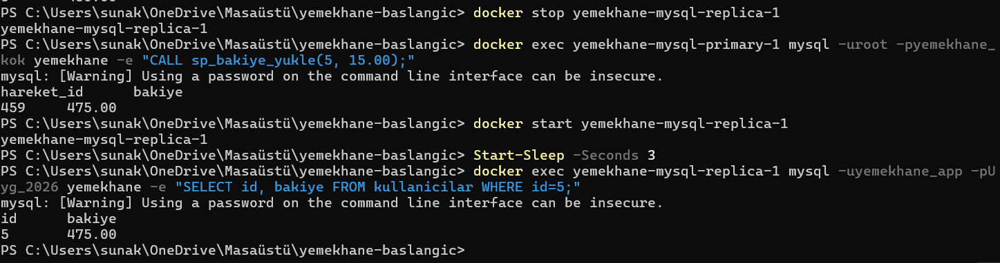
bcrypt doğrulaması), (2) Günün menüsü (yemekhane/öğün seçimi, yemekler, toplam kalori, vejetaryen ve alerjen bilgisi), (3) Haftalık menü ve rezervasyon (boş yer sayısı, role göre fiyat, son saat kontrolü), (4) Rezervasyonlarım (aktif, kullanıldı, iptal durumları ve iptal işlemi), (5) Bakiye (güncel bakiye, hareket geçmişi, bakiye yükleme), (6) Değerlendirme (kullanılmış menüye 1-5 puan ve yorum) ve (7) Yönetici paneli (menü oluşturma/düzenleme, doluluk ve ortalama puan).mysql-primary), listeleme ve raporlar replikaya (mysql-replica) yönlendirilmiş; arayüz ~400 px telefon genişliğinde kullanılabilir şekilde tasarlanmıştır.mysql-primary) commit edilen bakiye düşümü, ağ veya replika uygulama gecikmesi nedeniyle milisaniyeler içinde replikaya (mysql-replica) henüz yansımamış olabilir. Rezervasyon veya bakiye işleminden hemen sonra okuma replikadan yapılırsa kullanıcı eski bakiyeyi görebilir; bu nedenle işlem sonrası anlık bakiye doğrudan kaynak sunucudan okunur.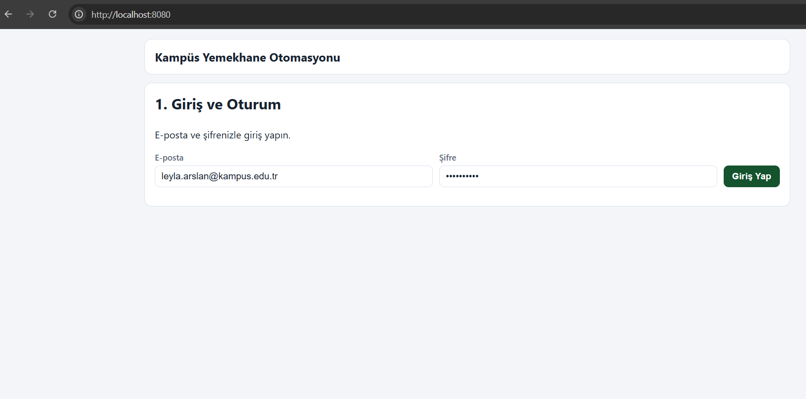
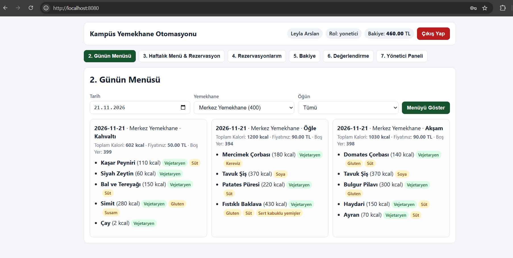
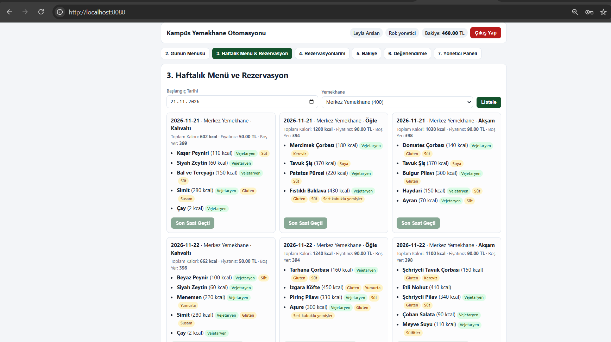
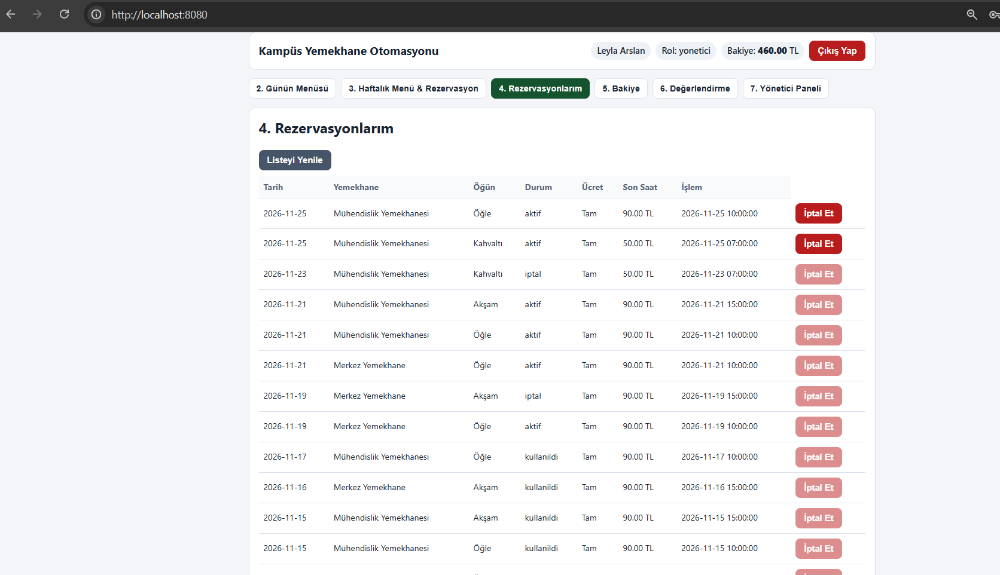
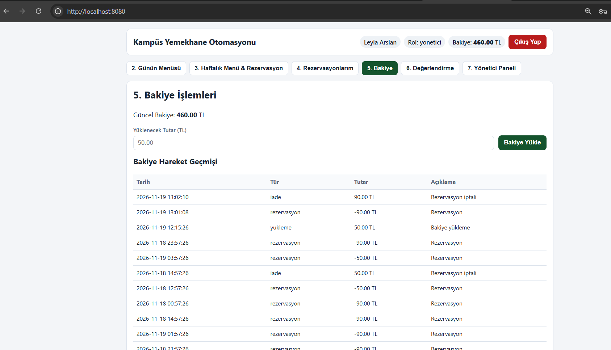
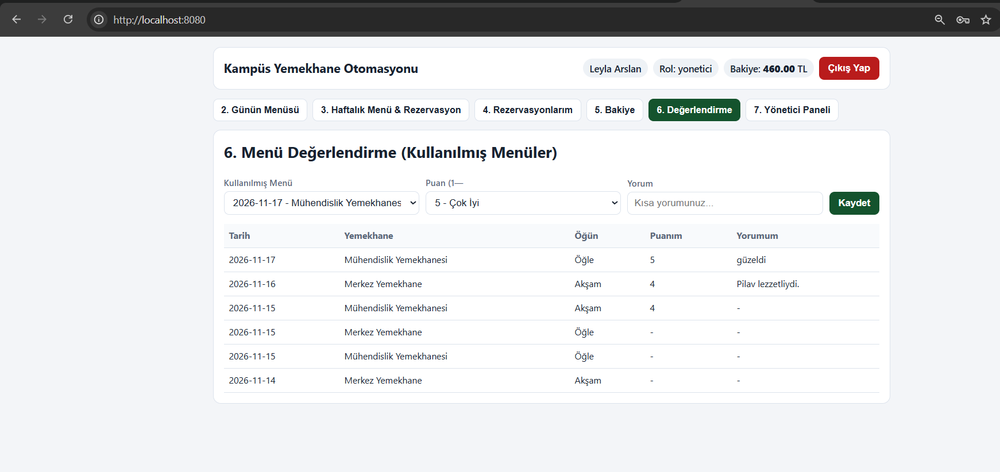
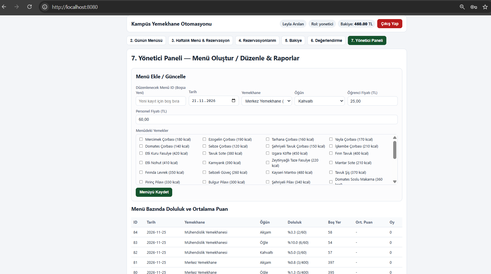
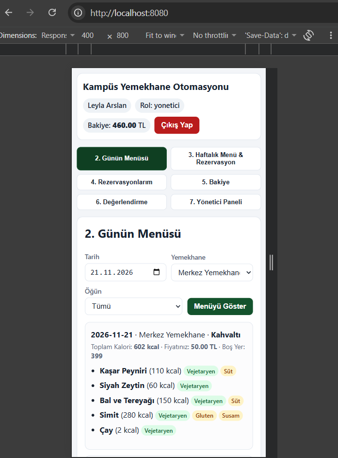
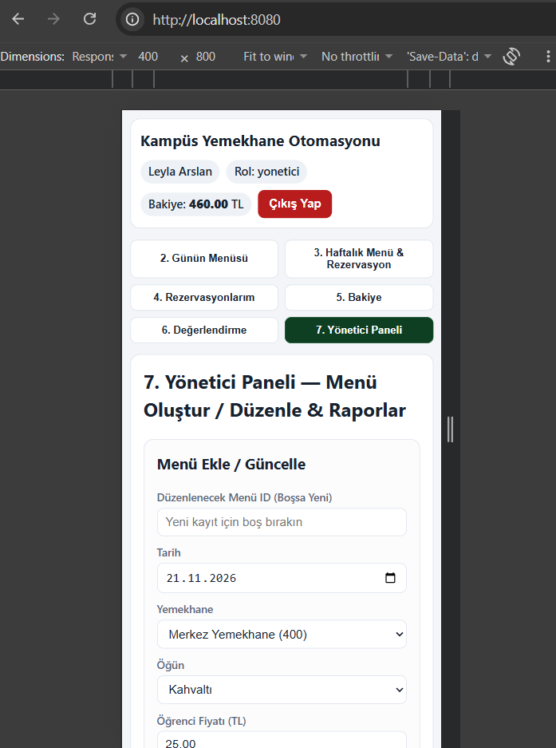
| Görev | Anahtar | Süre (TTL) | Silinme Zamanı |
|---|---|---|---|
| Menü önbelleği | menu:{yemekhane_id}:{tarih}:{ogun_id} | O günün sonuna kadar | Yönetici o menüyü güncellediğinde |
| Oturum | oturum:{token} | 30 dakika (her istekte yenilenir) | Çıkış yapıldığında |
error_log) yazılır.menu:{yemekhane_id}:{tarih}:{ogun_id} anahtarı silinir ve arayüz güncel menüyü gösterir.uygulama container'ı yeniden başlasa dahi oturumlar Redis üzerinde tutulduğu için kullanıcı oturumu düşmez.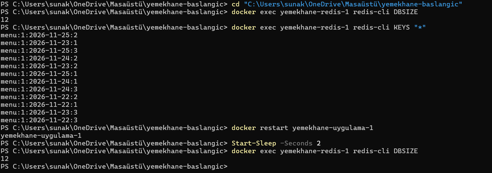
sp_rezervasyon_yap yordamı porsiyon ve %60 ücret kuralını destekleyecek şekilde güncellenmiştir.kullanici_alerjenleri tablosuna kaydedebilir ve menüde bu alerjenleri içeren yemekler uyarıyla gösterilir.db/init/04_degisiklik.sql dosyasında toplanmış, Redis'teki eski menü anahtarları temizlenmiş ve rezervasyonlar + kullanici_alerjenleri tablolarının replikaya geçtiği SHOW CREATE TABLE ile doğrulanmıştır.rezervasyonlar -> porsiyon enum('tam','yarim') NOT NULL DEFAULT 'tam'
kullanici_alerjenleri -> PRIMARY KEY (kullanici_id, alerjen_id)
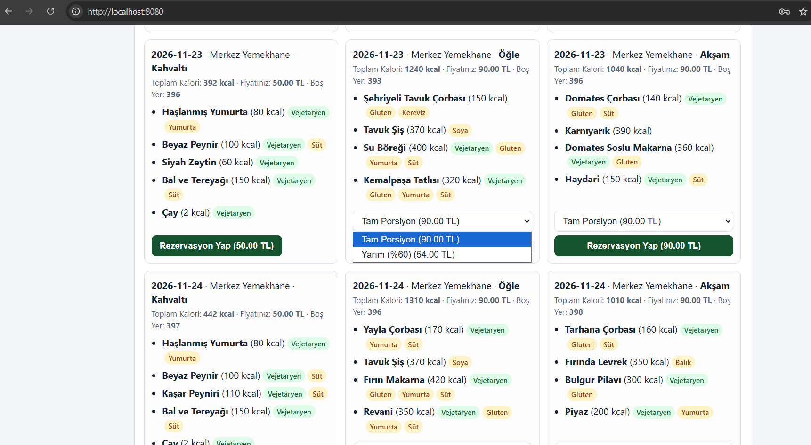
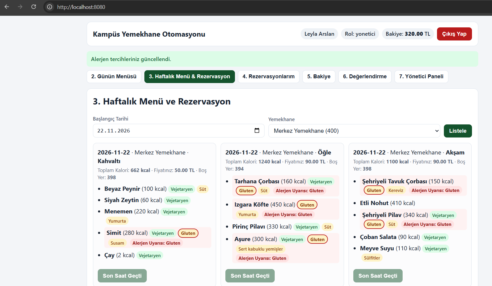
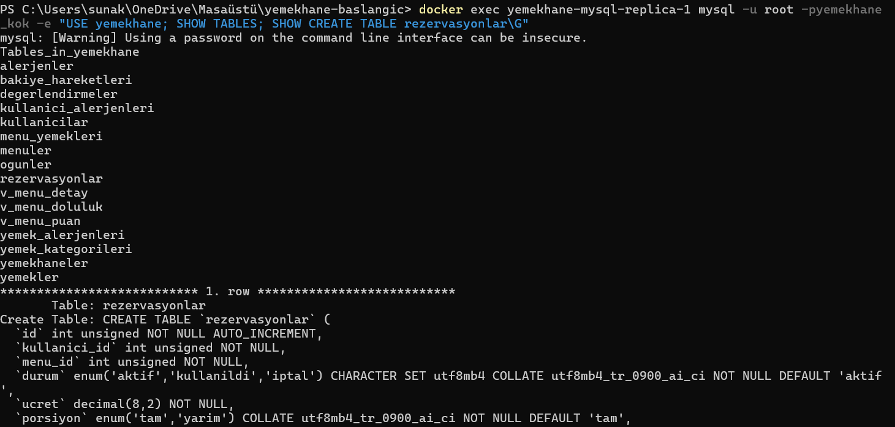
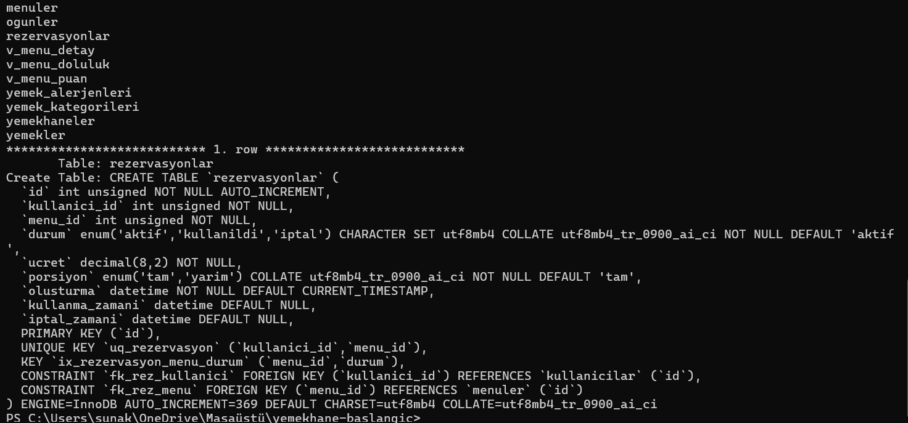